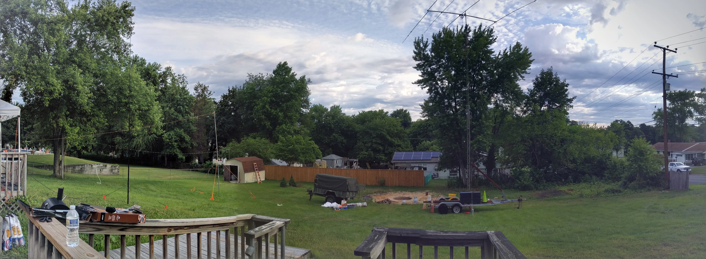

FD Commander handles the whole event, not just logging. Schedule volunteers, assign stations and equipment, run safety checklists, then log contacts across multiple operators in real time. All from any device on your LAN, no internet required.
Most Field Day software starts and ends at contact logging. FD Commander covers the whole operation, from weeks-before planning to the final Cabrillo export.
Build the full 24-hour schedule before the event. Operators sign themselves up for open slots, managers spot coverage gaps, and everyone knows when they're on.
Catalog personal and club-owned radios, antennas, and accessories. Assign gear to stations, track availability, and search by type, owner, or status.
The full 15-item ARRL safety checklist, built in. Check off items as you go, track required-vs-complete progress, and earn the 100-point Safety Officer bonus when everything's verified.
Every operator logs from their own device with a fast single-field entry flow. Dupes are caught instantly across all stations, and contacts queue locally if a device loses its connection.
Your score updates in real time as contacts come in: QSO points, power multiplier, bonus points, the whole formula. When the event ends, export a clean Cabrillo file for ARRL submission.
Let visitors sign in when they stop by your site. Distinguish between general public and licensed hams, record in-person and remote entries, and track attendance for bonus points.
Log radiograms and track NTS message handling: originated, relayed, and received. Capture the Section Manager message and W1AW bulletin for bonus points, and print formal radiogram copies.
Built-in roles for Event Manager, Safety Officer, Public Information Table, and Operator. Permissions are fully customizable, so you can tailor access to fit how your club actually operates.
The entire platform runs air-gapped on your local network. Set up a server in the field (even on a Raspberry Pi) with zero external dependencies.
FD Commander follows the natural arc of a Field Day event: deploy the server, plan your operation, run the contest, and submit your results.
Install FD Commander on any Linux machine and connect it to your LAN. Clone the repo, run the deploy script, and you're up.
Define stations, schedule operators, assign equipment, and run through safety checklists. Do this weeks before or the morning of.
Operators open a browser and start logging. Scores, dupes, and band activity update live across every device.
Export a clean Cabrillo file and submit to ARRL. Your score, contacts, and bonus points are all accounted for.
FD Commander ships with sensible default roles, and every permission is fully customizable to match how your club operates.
Gets the server running, sets up the database, and creates accounts. Handles the infrastructure so everyone else can focus on the event.
Builds the schedule, assigns stations, runs through safety checklists, watches the live score, and handles the Cabrillo export at the end.
Manages a single operating position. Tracks equipment, coordinates band and mode usage, and keeps operators on schedule.
Opens a browser, sits down, and starts logging. A clean single-field entry flow with instant dupe checks and live band activity. No distractions.
Built on proven technologies. Light enough to run on a Raspberry Pi powered by a portable battery.
FD Commander replaces the patchwork of separate tools with one platform that handles planning, operations, and logging together. Free, open source, built by hams.